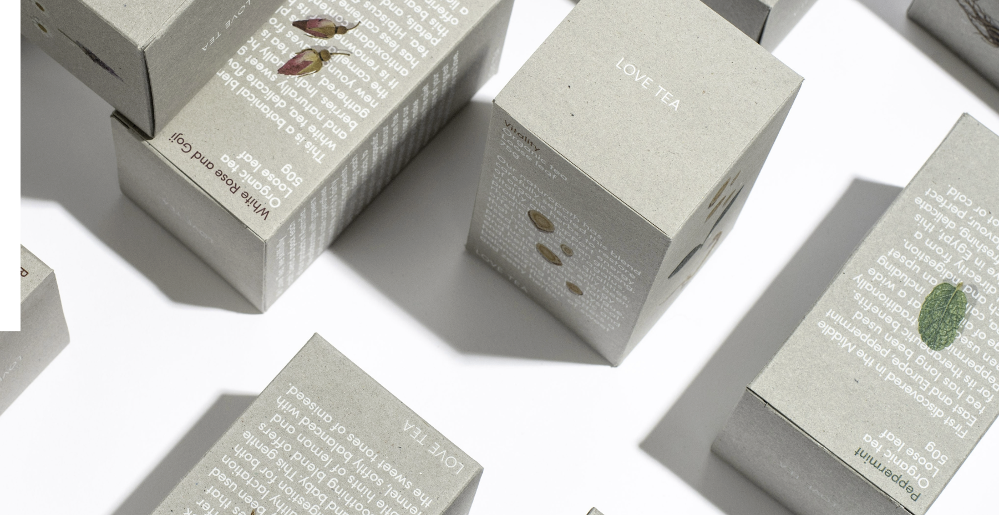
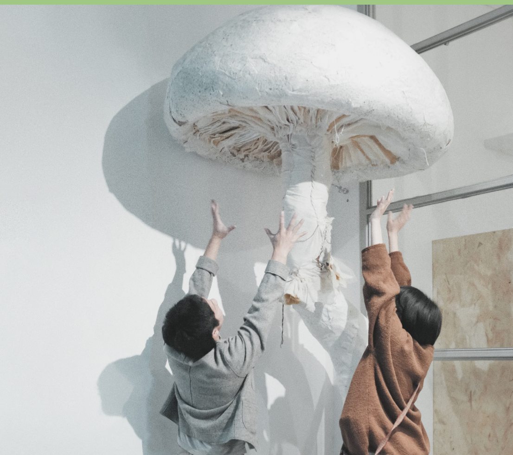
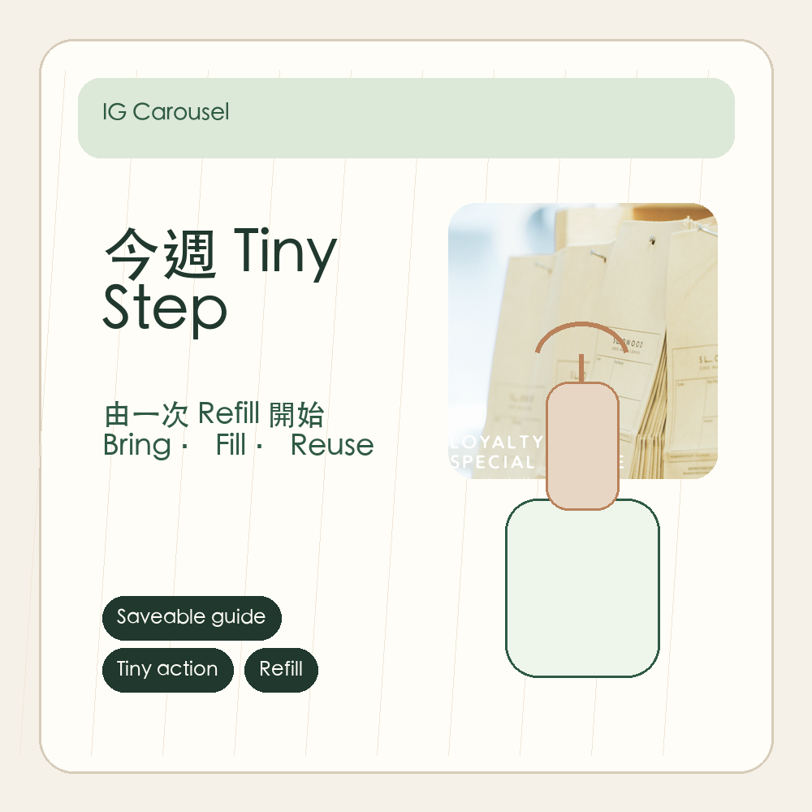
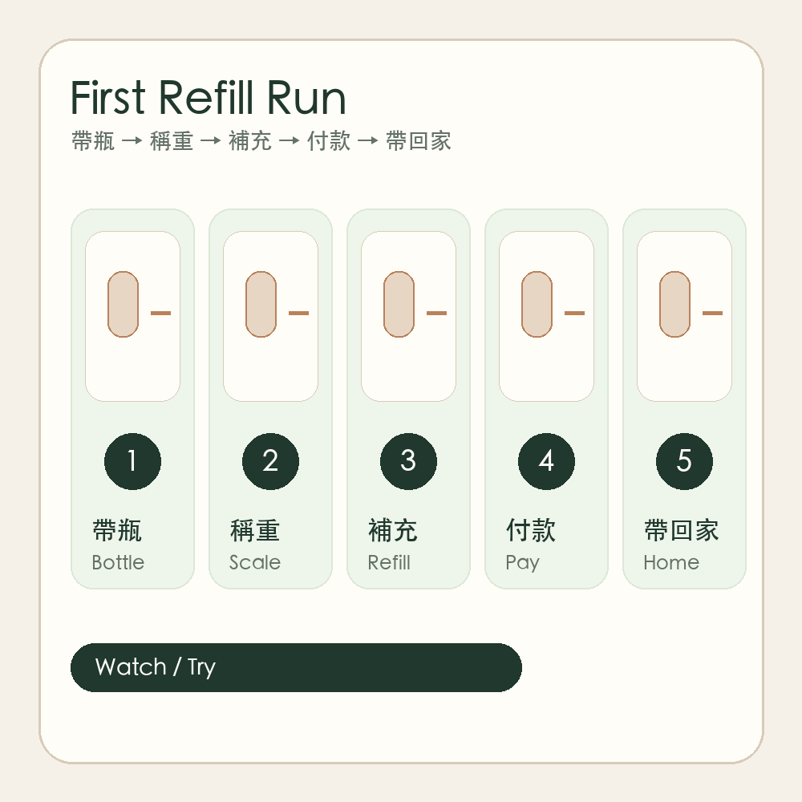
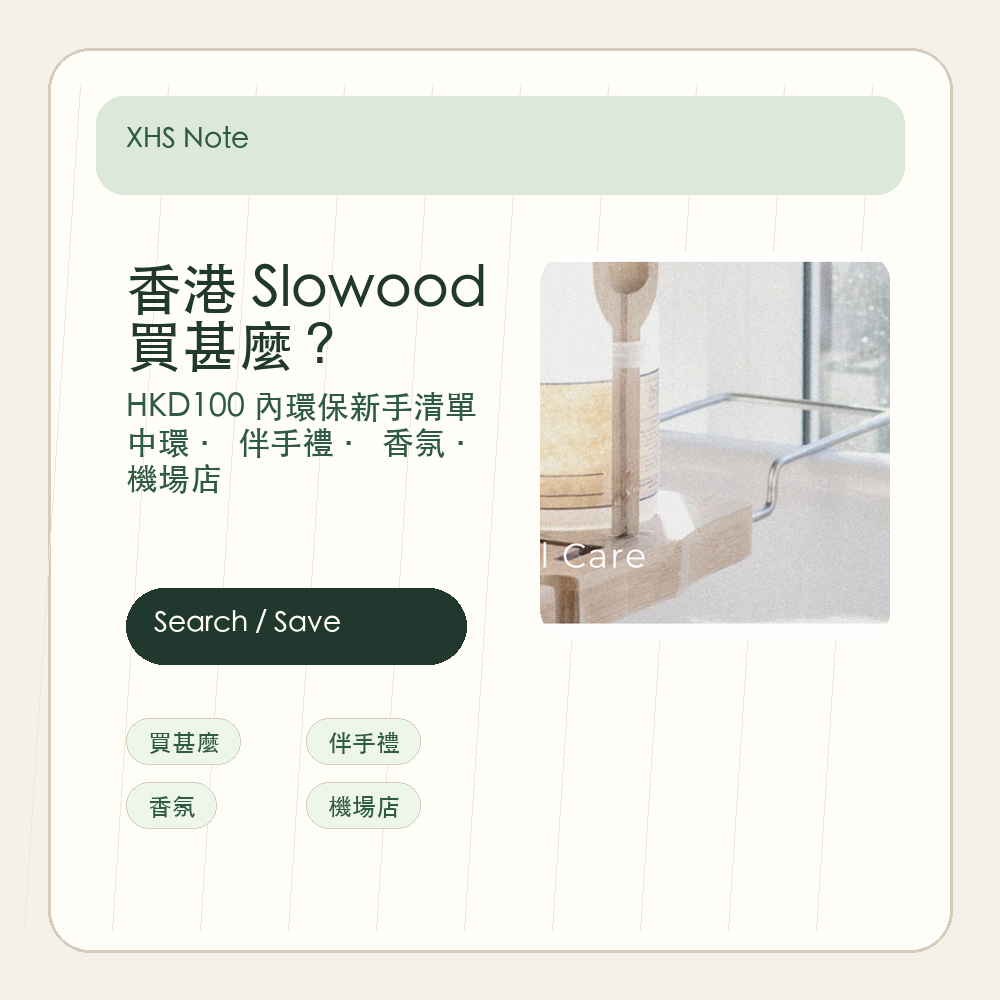
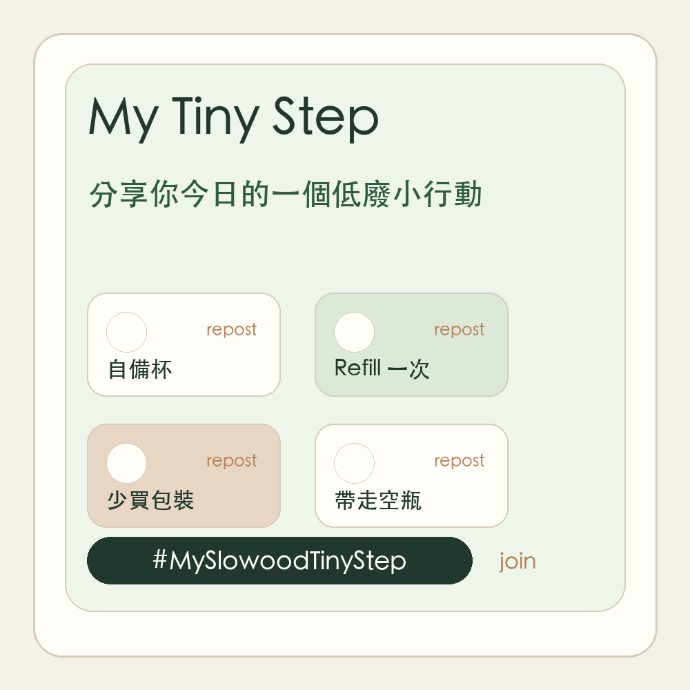

Slowood IG sample
- Sample
- 17 owned public posts
- Observed signal
- education / product-heavy content
- Marketing implication
- need more action-led and saveable content
A public-data-based content strategy project for a Hong Kong sustainable lifestyle retailer.
Independent portfolio case based on public-facing materials; not affiliated with Slowood. Findings are sample-based and directional.
Slowood is a Hong Kong-based sustainable lifestyle and zero-waste retail brand with a strong offline store presence and a clear brand message around conscious living.
This portfolio case uses public social content, competitor references, Xiaohongshu search signals and visible public comments to identify content opportunities.
This is not an internal sales, CRM or paid media analysis.
Slowood has a clear sustainable lifestyle positioning, but public-facing content can do more to help users move from awareness to practical action: what to buy, how to refill, where to visit and how to share small sustainable habits.



How can Slowood make its sustainable lifestyle message more searchable, practical and shareable through public-facing social content?
Boundary: public sample only; not internal analytics.
Visual references are used for context only and do not imply official Slowood campaign work.
The opportunity is to move from brand-led education toward user-action-led content.
Useful content should help people discover products, understand refill, plan a visit and share small sustainable actions.
Translate public signals into testable content opportunities.
From eco-education to tiny, shareable actions.
The content system should be searchable, saveable, actionable and shareable.
saveable education
Tiny StepSavesprocess demonstration
First Refill RunViewssearch discovery / product consideration
Useful Finds as application exampleSavesinteraction / Q&A
PollsRepliescommunity loop
Tiny Step WallTagsThese are conceptual portfolio prototypes, not official Slowood campaign assets.




Current visuals are based on public sample data and directional coding. Larger post samples, platform analytics, store traffic and CRM data would be needed to validate performance impact.
This case shows how public signals can support content opportunity diagnosis and platform planning.
Further validation would require a larger content sample, platform analytics, store traffic data and conversion data.